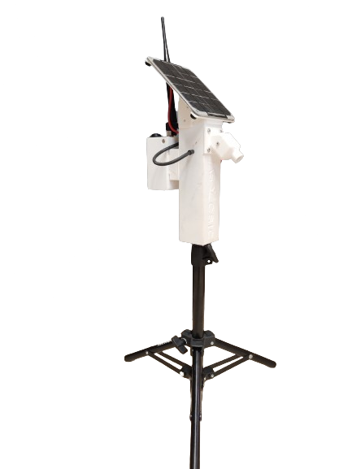

The Problem
Thermography — using specialized cameras to capture infrared radiation — offers a non-contact way of measuring temperatures, crucial in fields such as agriculture and plant eco-physiology. By assessing plant temperature, their level of water stress or crop evapotranspiration can be determined, avoiding tedious and limited contact methods.
The use of thermal cameras mounted on drones enables efficient irrigation analysis at field scale, but precision is critical. Fluctuations during flight and calibration drift can introduce errors of up to 6°C between aerial thermal images and ground truth measurements — making the data practically unusable for fine-grained agronomic decisions.
The Solution
This thesis developed a complete system to correct radiometric errors in drone-mounted thermal cameras. The approach involved:
Four continuous temperature sensors were designed and built, operating via LoRaWAN radio communication with integrated GPS geopositioning. A mounting structure allowed these sensors to travel alongside the drone during each flight.
Additionally, four calibration panels of different colors were constructed and placed in the field to provide stable, known-temperature reference objects visible in every thermal image. A radiometric calibration model was developed in Python to account for atmospheric effects, camera drift (microbolometer behavior), and the uncooled sensor's temperature fluctuations during flight.
The calibration model reduced temperature error from ~6°C to less than 0.5°C between aerial thermal images and ground sensor measurements — enabling reliable agronomic decisions from UAV thermography for the first time.
Impact
This achievement represents a foundational advance for thermography in precision agriculture. With sub-0.5°C accuracy, it became possible to reliably detect crop water stress from the air — a key input for the precision irrigation models developed in subsequent PhD research.
The PyRADTEMCam methodology is now applied operationally in the STIMA2 and Smart Almond research projects for almond irrigation scheduling.

